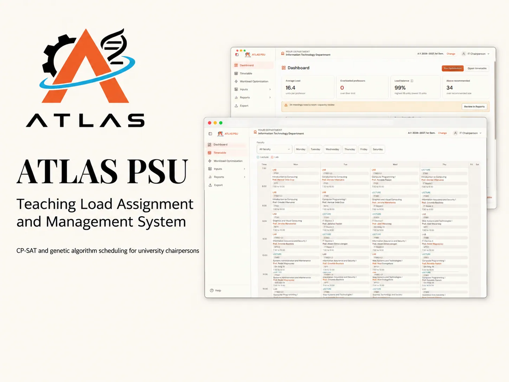
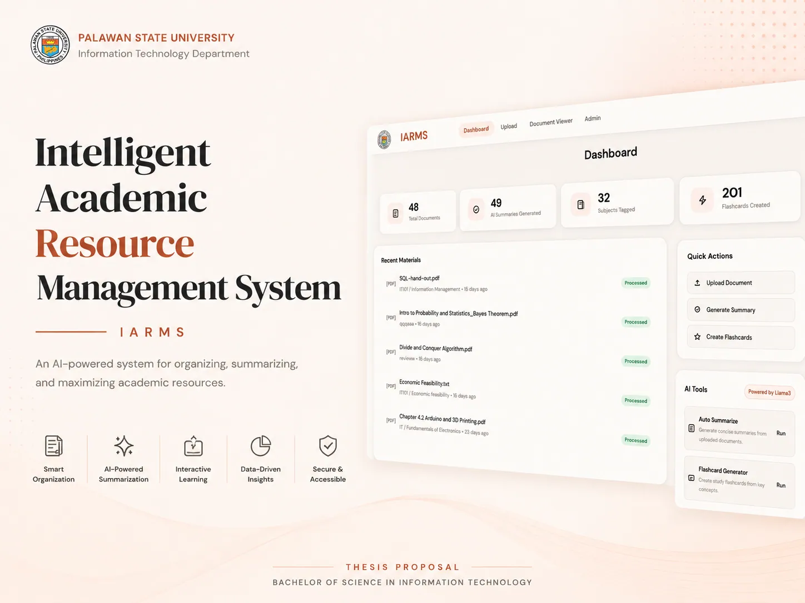
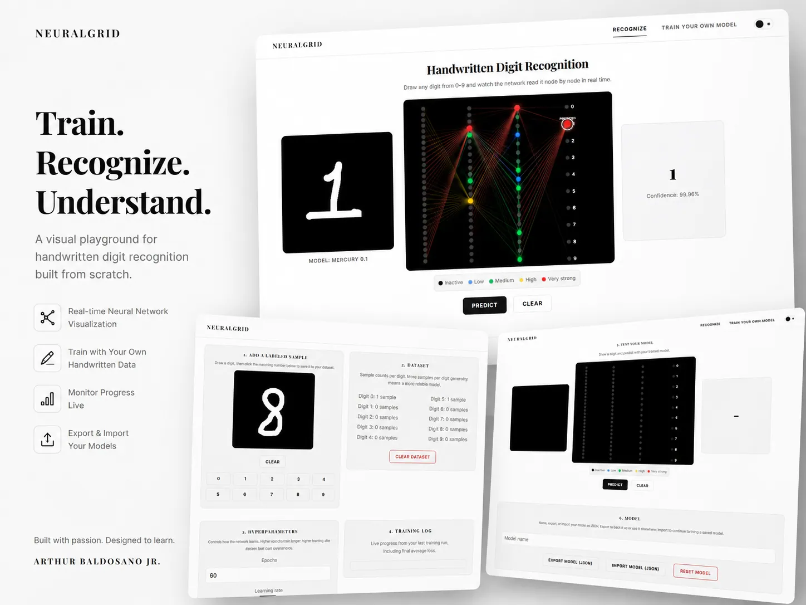
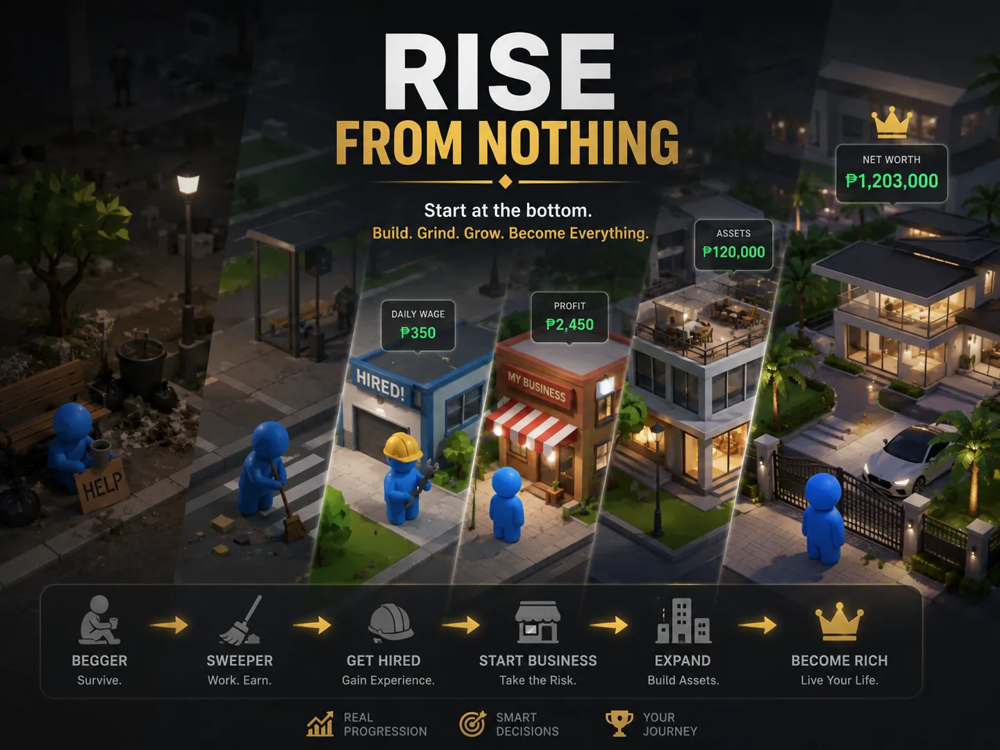
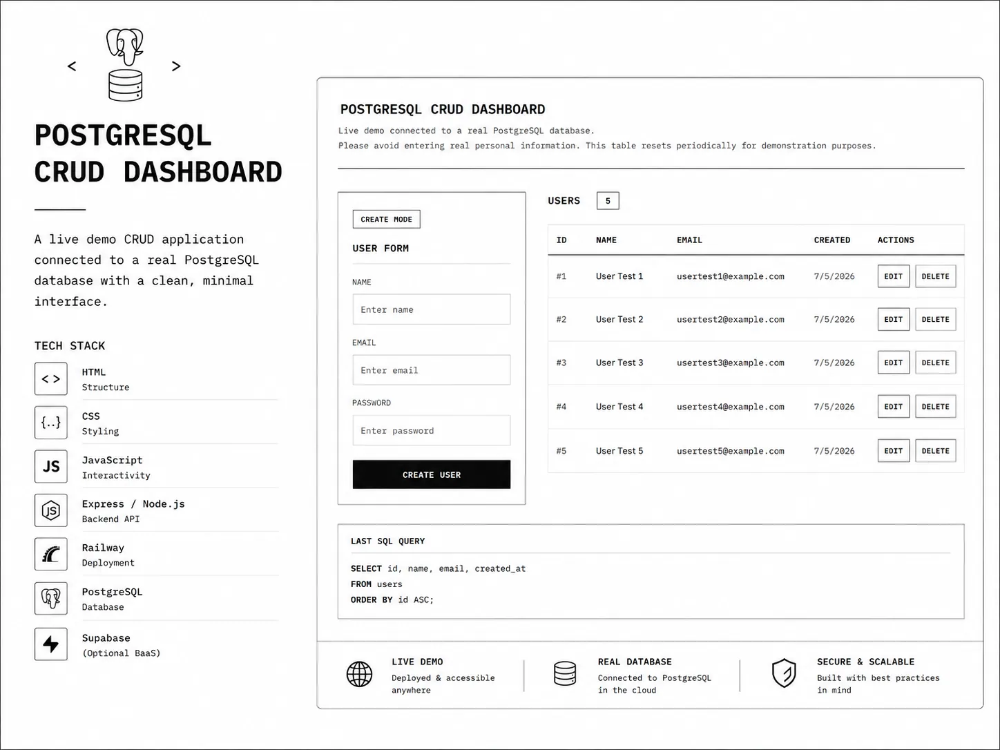
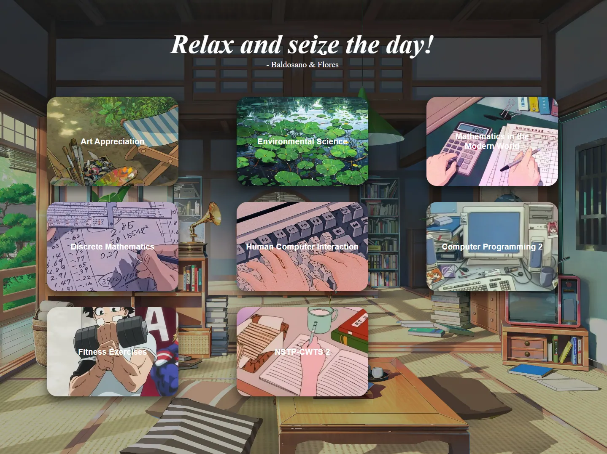
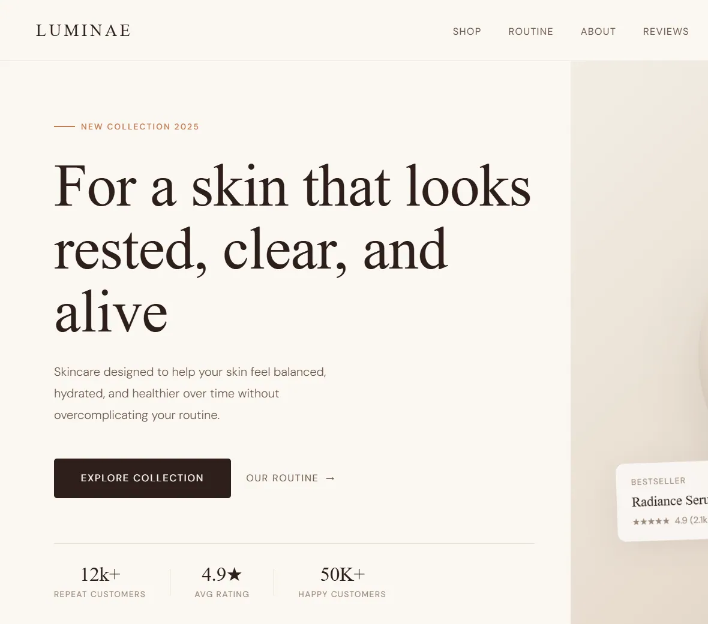
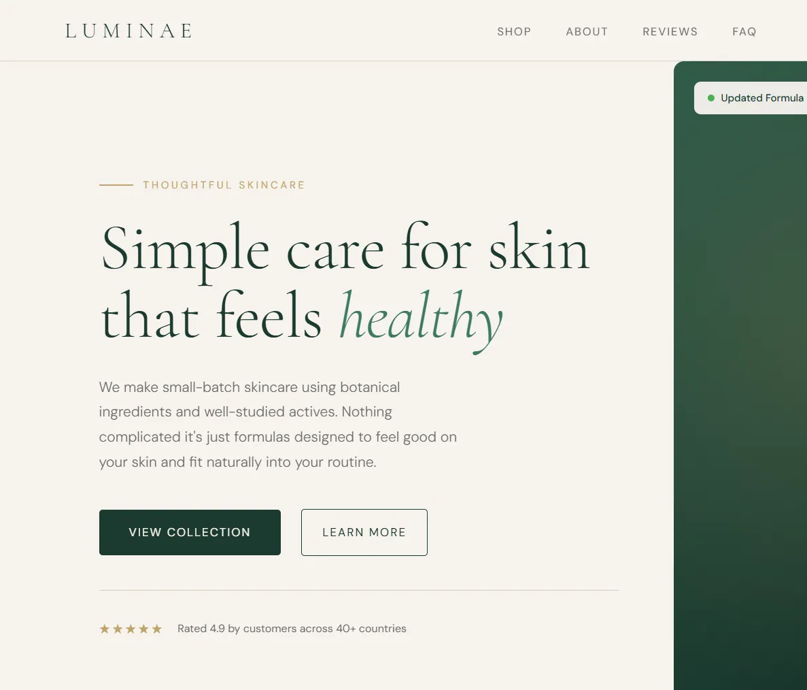
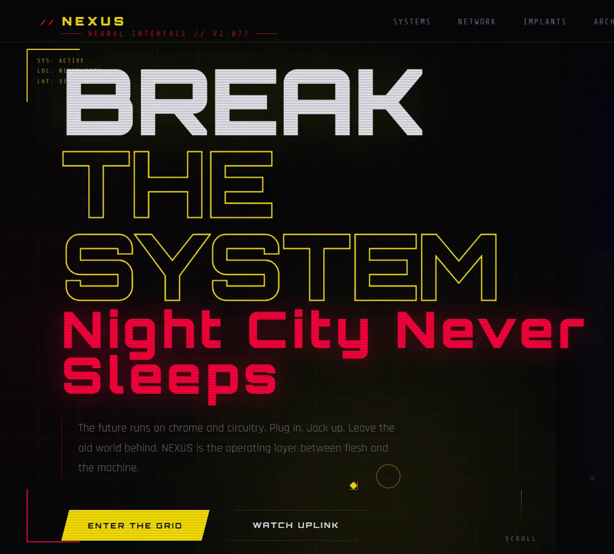
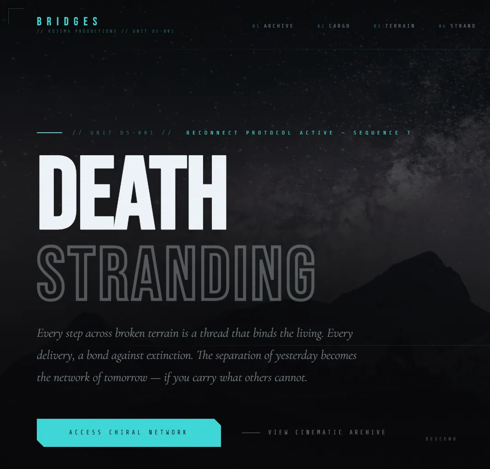

Selected Work
A curated selection of custom-built web systems, full-stack applications, and independently operated digital platforms. Delivered for real clients, real institutions, and real users.
Top Live Projects

Primary Featured · Award-Winning · Live System
A live system that assigns faculty teaching loads for College of Sciences chairpersons at Palawan State University, using CP-SAT and a genetic algorithm. 1st Place, Most Innovative Study, and Best Presenter.

01 · Thesis Proposal Prototype
AI-powered academic resource platform for PSU's BSIT students. Generates summaries, flashcards, quizzes, glossary, and key concepts from uploaded documents. Backend runs Ollama (Llama3) locally; GPT-5 Mini API planned for production.
02 · Live Project
A full-stack site featuring a custom AI chatbot with serverless LLM integration via Cloudflare Worker, plus an embedded Python IDE for live code execution. Security-audited and hardened with XSS-safe markdown rendering, prompt-leak detection, and Cloudflare KV rate limiting.

03 · Live Project
A fully browser-based handwritten digit recognizer powered by Mercury 0.1, a neural network trained from scratch using vanilla JavaScript. Features a live pseudo-3D visualization of every activation as predictions happen, plus an isolated sandbox for training your own model.
04 · Live Business
Independently owned affiliate e-commerce platform curating Shopee picks. PostgreSQL backend, semi-automated Involve Asia API intake pipeline on serverless Edge Functions. Traffic driven via Pinterest.

05 · Early Development
A cross-platform incremental life simulation game built with HTML5, CSS, JavaScript, and Three.js, featuring a 3D world, NPC AI, passive economy systems, persistent progression, and native Android APK support alongside web deployment. Currently in active development.

06 · Live Project
Full stack CRUD dashboard connecting a PostgreSQL database to an Express backend and a vanilla JavaScript frontend. Built with parameterized queries, bcrypt password hashing, server side input validation, and accessibility features.
07 · Live Project
Lightweight, no-login stock market viewer for instant access to real-time market data. Search any ticker symbol and view live info without creating an account. Built on the principle that financial data should be frictionless.
08 · Live Project Game
A drag-and-drop sorting game built in C# for my Data Structures and Algorithms final project, later ported to the web in June 2026, where players sort falling grocery items into the correct baskets before they hit the ground.

09 · Live Project
The direct predecessor to IARMS. Built as a foundational school project exploring interactive study tools. Served its academic purpose and directly informed the architecture and design decisions behind IARMS.
Freelancing Projects
10 · Freelance · Paid
Complete class and school website delivered for a paying client using Google Sites. Covers all required content areas with clear navigation, organized layout, and a professional finish suited for an academic audience.

11 · Freelance
Client-facing product discovery layout built as a freelance deliverable. Format 1 explores a structured editorial approach to product presentation, designed for clarity, ease of browsing, and clean visual hierarchy.

12 · Freelance
Second iteration of the product discovery web format, exploring an alternative visual and structural direction. Format 2 refines layout density, browsing flow, and interaction patterns as a comparative freelance study.
For Fun Projects

13 · Personal · For Fun
Creative frontend build inspired by Cyberpunk 2077, exploring immersive UI design, dynamic visual elements, and game-inspired interaction patterns. Built entirely in pure HTML, CSS, and JavaScript, with no framework dependencies.

14 · Personal · For Fun
Creative frontend build inspired by Death Stranding, experimenting with atmospheric visual design, layered UI elements, and game-inspired interaction flow. A deliberate exploration of mood-driven frontend aesthetics.